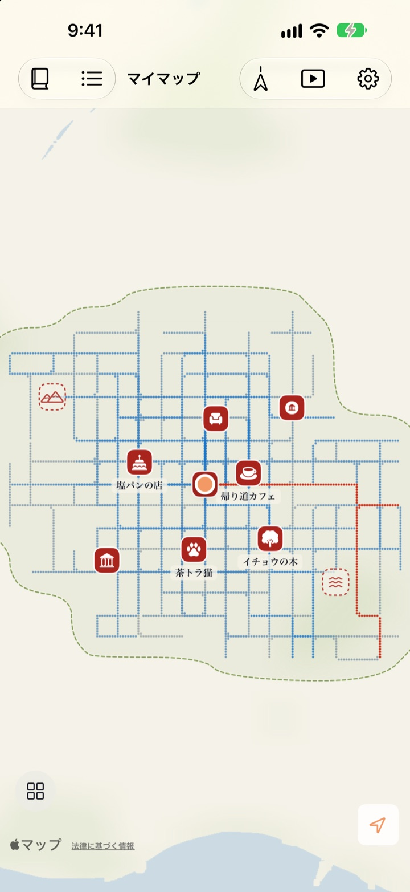
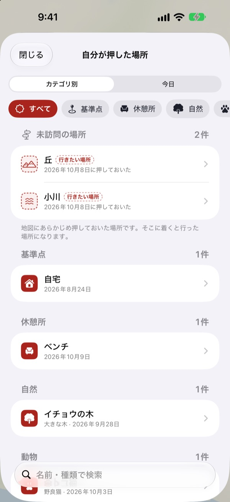
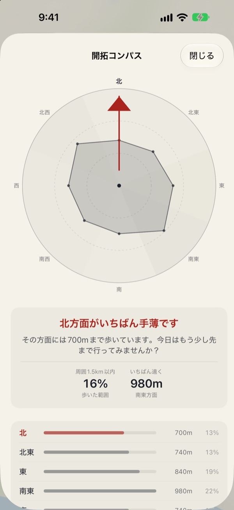
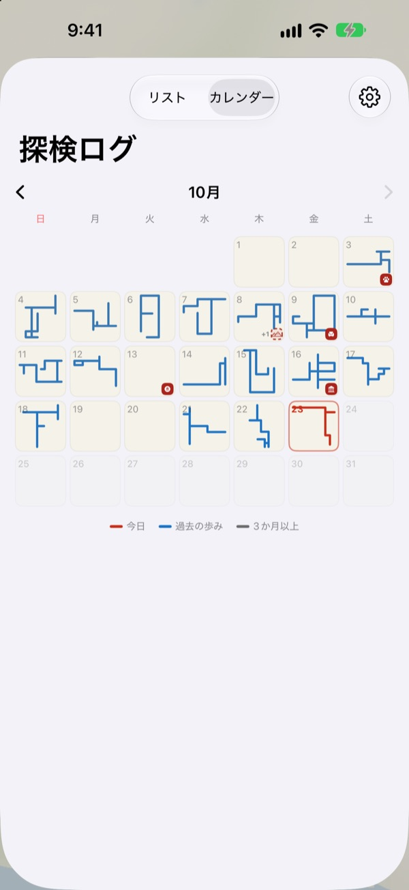

歩いた道だけが
色づく地図
最初は真っ白な一枚の紙。自分の足で歩いた場所だけが一点ずつ埋まり、同じ道を百回歩いても地図は広がりません。広げたいなら、新しい道へ。
すべての機能が無料、広告もありません。

歩いてみよう
紙の上を指やマウスでなぞると、歩いたことになります。青い点は以前に歩いた道です。その上をなぞるときと、新しい方へ進むときで、「今日引いた道」がどう変わるか見てください。
毎日、同じ道ばかり歩いていませんか？
歩数計は歩数を数えても、どこを歩いたかは気にしません。家と駅の往復でリングは埋まり、すぐ隣の路地は何年も知らないまま。Buktu Buktuは初めて歩いた道だけを数えるので、今日は一本となりの道へ寄り道する理由ができます。
行った場所と行きたい場所にスタンプを
今いる場所に、または地図を長押しした好きな場所にスタンプを押せます。スタンプはカテゴリ別に212種類。
まだ歩いたことのない場所に押したスタンプは「行きたい場所」として残り、実際にたどり着くと「行った場所」に変わります。お店の看板を撮ると背景が切り抜かれ、その場所のステッカーとして立ちます。

次の散歩は、いちばん歩いていない方角へ
開拓コンパスは周りを8方位に分け、いちばん歩いていない方角を指し示します。
今日の足あとは、今日立ち寄った場所を順番に並べ、その間を歩いた距離も添えます。

毎日が、ひとつの形になる
カレンダーには数字の代わりに、その日歩いた形が描かれます。文章と写真で毎日の日記を残し、それぞれの散歩のうちどれだけが新しい道だったかも見られます。
期間を選べば、地図が描かれていく様子を動画で見て、書き出せます。

3ステップで始めましょう
- 1
アプリを開く
真っ白な紙が広がります。
- 2
位置情報を許可する
「常に許可」を選び、モーションとフィットネスをオンにすると、アプリを開かなくても散歩が記録されます。
- 3
出かける
知らない道ほど、地図は大きく広がります。
地図の見かた
- 赤い点
- 今日歩いた場所
- 藍色の点
- 過去の歩み。よく通る場所ほど濃くなります
- 灰色の点
- 3か月以上行っていない場所。色あせても消えません
- 点線のスタンプ
- 行きたい場所。たどり着くと行った場所になります
- 自分が描いた道
- これまでに初めて歩いた道の合計の長さ
- 今日引いた道
- 今日の散歩のうち、初めて歩いた道の長さ
- まとめて見る
- 設定から開拓コンパス、今日の足あと、地図が描かれていくフィルムを開けます
地図は墨の地図と絵地図から選べます。
すべての機能が無料
無料
- 歩いた場所だけが埋まる地図と、新しい道の記録
- 212種類のスタンプと看板ステッカー
- 開拓コンパスと今日の足あと
- カレンダーと、文章と写真の日記
- 地図が描かれていく動画の書き出し
- ホーム画面とロック画面のウィジェット
- デバイス間のiCloud同期
開発者を応援する
- よろしければ、設定から少額のチップを送れます
- チップで何かが解放されることはありません。アプリはどちらでも同じです
広告なし、サブスクリプションなし。
よくある質問
歩いたのに、地図に何も表示されません。
設定 > Buktu Buktu > 位置情報で「常に」を選び、モーションとフィットネスをオンにしてください。これでアプリを閉じていても記録されます。アプリの設定で記録方法をバッテリー優先にしている場合は、アプリを開いてから歩き始めてください。精度の低い位置は保存されますが、地図には描かれません。
車や電車での移動も記録されますか？
いいえ。モーションデータと速度から歩きと走りだけを描き、乗り物らしい区間は除きます。まれに判定を誤ることがあります。
毎日同じ道を歩いているのに、地図が広がりません。
それがルールです。すでに歩いた場所から30 m以内は同じ道とみなすので、「自分が描いた道」に加わるのは初めての道だけです。通りの向かいの歩道も同じ道に数えます。あまり歩いていない方角は、開拓コンパスで確かめられます。
位置情報はどこかに送信されますか？
開発者には送信されません。歩み、スタンプ、日記、写真は端末とご自身の個人用iCloudに保存され、開発者は見ることができません。匿名の利用統計に、座標、日記の文章、場所の名前、写真が含まれることはありません。座標を場所の名前に変えるために、Appleマップのサービスを使います。詳しくは下のプライバシーポリシーをご覧ください。
機種変更しても記録は引き継がれますか？
はい。新しい端末で同じAppleアカウントにサインインし、iCloudをオンにしておけば、歩み、スタンプ、日記、写真が引き継がれます。
スタンプや写真はどう削除しますか？
スタンプは「自分が押した場所」の一覧から削除できます。日記の写真は長押しして削除します。道と日記をまとめて消す方法は、今後の予定に入っています。
ウィジェットはどう追加しますか？
ホーム画面を長押しして「編集」>「ウィジェットを追加」をタップし、Buktu Buktuを選びます。ロック画面は長押ししてから「カスタマイズ」をタップします。ホーム画面のウィジェットには今日の道の形と長さ、ロック画面には今日の距離が表示されます。
必要な環境は？
iOS 17.0以降を搭載したiPhone。
問い合わせ方法は？
アプリの設定からフィードバックを送るか、下のアドレスにメールしてください。できるだけ早くお返事します。
ご質問やご意見は leeo@kakao.com までお寄せください。